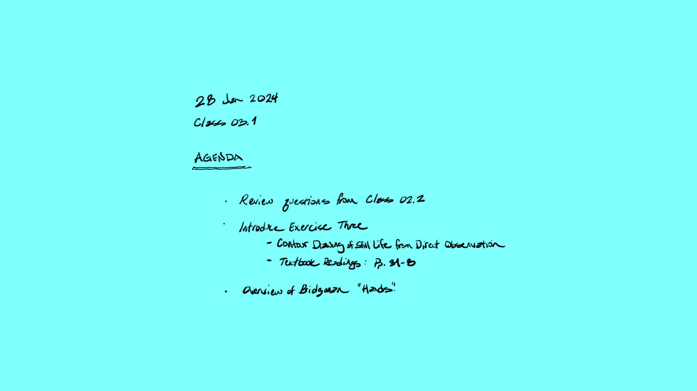
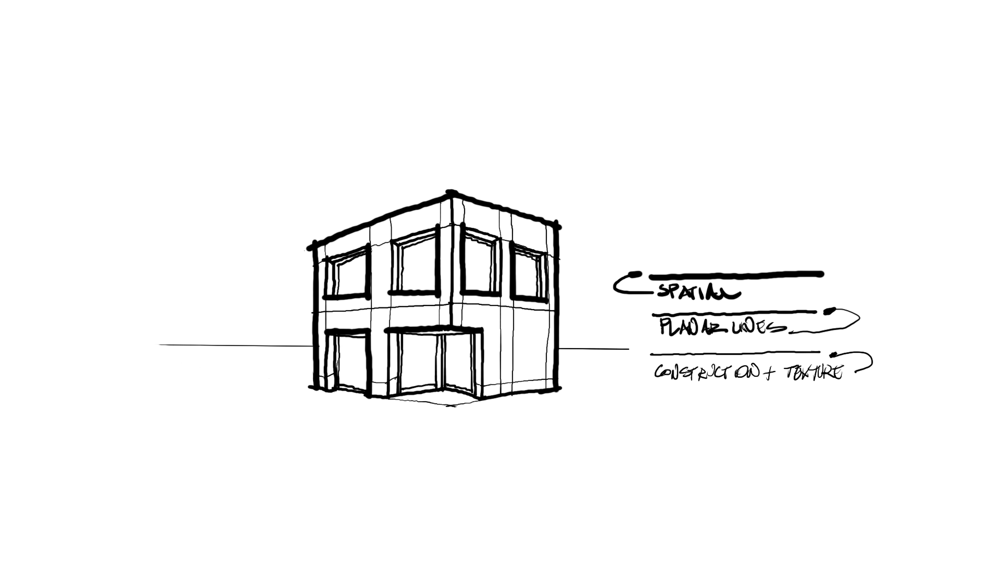
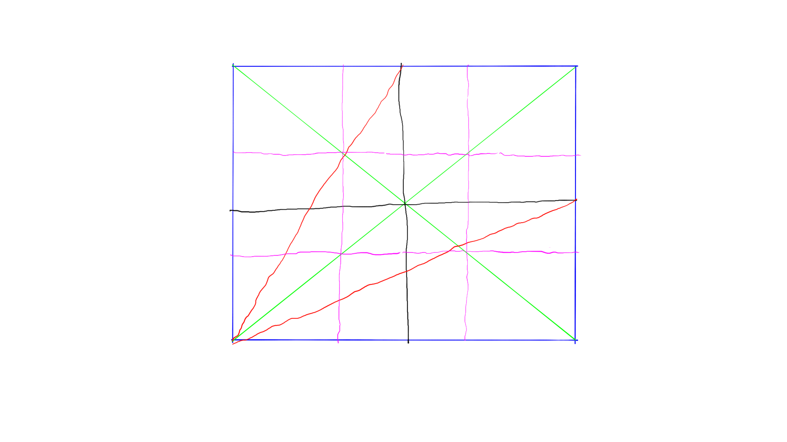
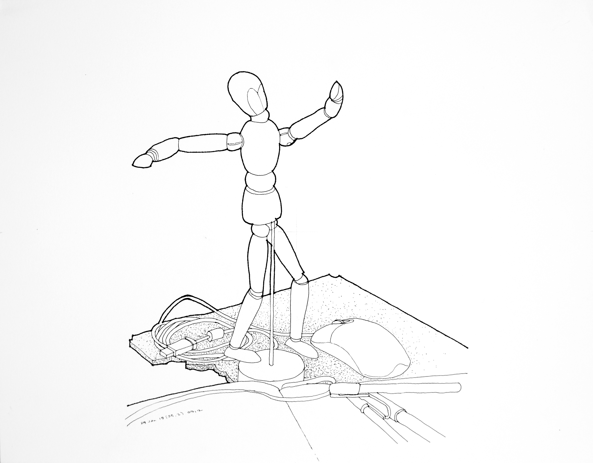
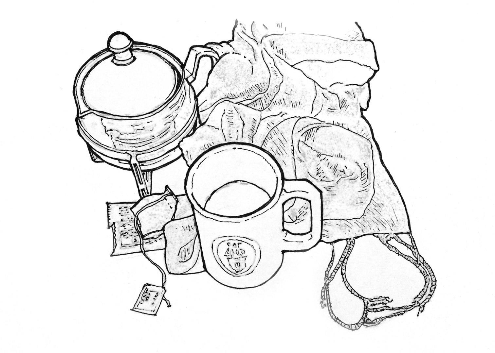
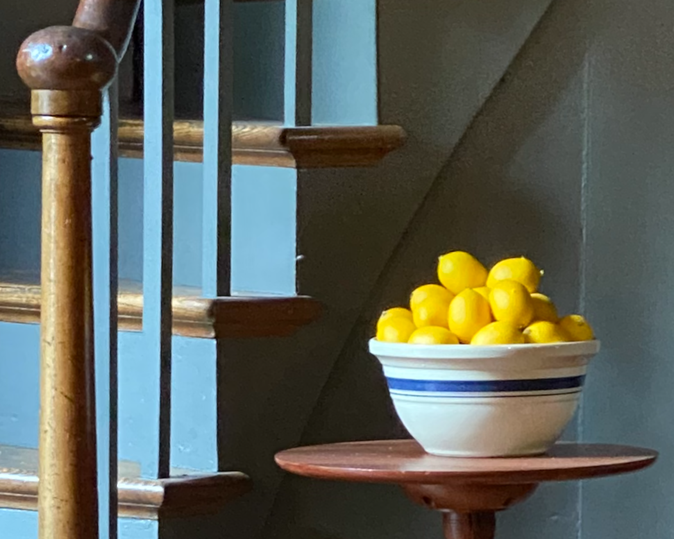
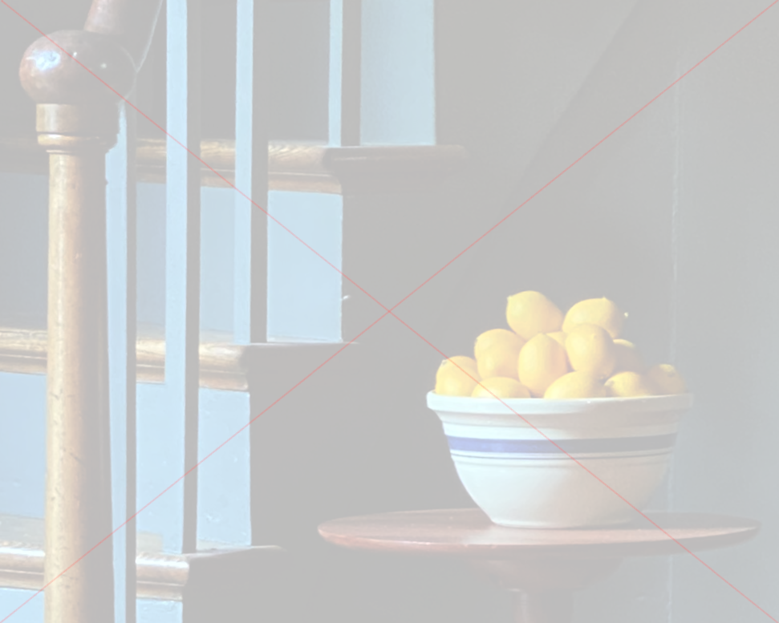
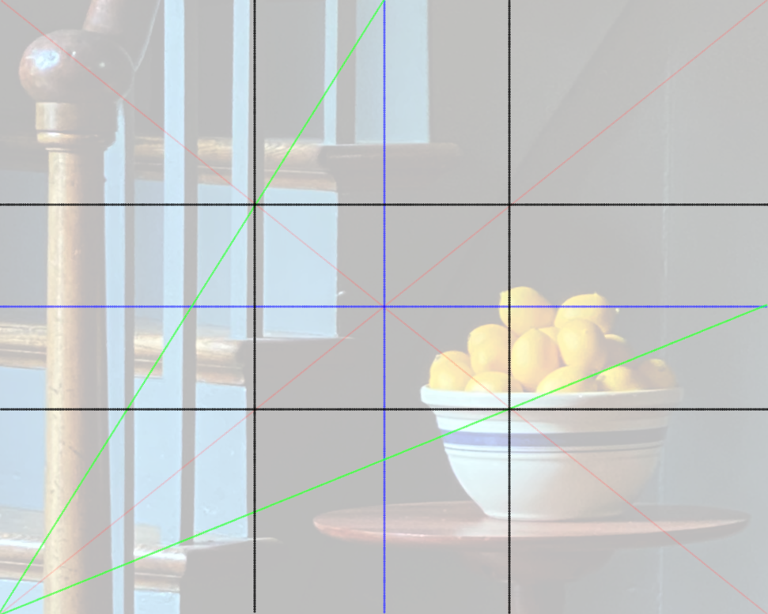

Today’s Agenda

Resource for Ex. 3

Resource 2 for Ex. 3

Fig. 2.4 Ex. 3 Contour Drawing of Still
Life from Direct Observation

Fig. 2.5 Still Life with
Scarf

Mapping an ImageMapping an Image saturation

Mapping an Image red
diagonalsMapping an Image blue
quartersMapping an Image green
triangle

Mapping an Image black rule of
thirds